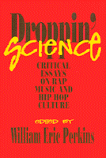

Leading authorities write on the complex—and sometimes controversial—history, politics, and culture of rap and hip hop
Leading authorities write on the complex—and sometimes controversial—history, politics, and culture of rap and hip hop


 Leading authorities write on the complex—and sometimes controversial—history, politics, and culture of rap and hip hop
Leading authorities write on the complex—and sometimes controversial—history, politics, and culture of rap and hip hop

|  |
Droppin' ScienceCritical Essays on Rap Music and Hip Hop Cultureedited by William Eric Perkinspaper EAN: 978-1-56639-362-1 (ISBN: 1-56639-362-0) |
"It is the undisputed word, the perfect blend of truth with reality, the flyest and realest reading about the flyest and realest art. These essays are informational, readable, and necessary to correct the misunderstanding that sweeps the news."
—Ishmael Butler (aka Butterfly), Grammy Award-winning artist, Digable Planets
Rap and hip hop, the music and culture rooted in African American urban life, bloomed in the late 1970s on the streets and in the playgrounds of New York City. This critical collection serves as a historical guide to rap and hip hop from its beginnings to the evolution of its many forms and frequent controversies, including violence and misogyny. These wide-ranging essays discuss white crossover, women in rap, gangsta rap, message rap, raunch rap, Latino rap, black nationalism, and other elements of rap and hip hop culture like dance and fashion. An extensive bibliography and pictorial profiles by Ernie Pannicolli enhance this collection that brings together the foremost experts on the pop culture explosion of rap and hip hop.
Excerpt available at www.temple.edu/tempress
Preface
1. The Rap Attack: An Introduction – William Eric Perkins
Part I: Roots
2. Women Writin' Rappin' Breakin' – Nancy Guevara
3. Rap's Latino Sabor – Mandalit del Barco
4. Puerto Rico Rocks: New York Ricans Stake Their Claim – Juan Flores
Part II: Genres
5. Kickin' Reality, Kickin' Ballistics: Gangsta Rap and Postindustrial Los Angeles – Robin D. G. Kelley
6. Making the Strong Survive: The Contours and Contradictions of Message Rap – Ernest Allen, Jr.
7. Who Wants to See Ten Niggers Play Basketball? – Armond White
Part III: Flavas
8. Hip Hop 101 – Robert Farris Thompson
9. Dance in Hip Hop Culture – Katrina Hazzard-Donald
10. Hidden Politics: Discursive and Institutional Policing in Rap Music – Tricia Rose
11. Global Village: An Epilogue – William Eric Perkins
About the Contributors
The late William Eric Perkins was a Faculty Fellow at the W.E.B. DuBois House at the University of Pennsylvania, and an Adjunct Professor of Communications at Hunter College, City University of New York.
African American Studies
Music and Dance
Sociology
Critical Perspectives on the Past, edited by Susan Porter Benson, Stephen Brier, and Roy Rosenzweig.
Critical Perspectives on the Past, edited by Susan Porter Benson, Stephen Brier, and Roy Rosenzweig, is concerned with the traditional and nontraditional ways in which historical ideas are formed. In its attentiveness to issues of race, class, and gender and to the role of human agency in shaping events, the series is as critical of traditional historical method as content. Emphasizing that history is itself an interpretation of material events, the series demonstrates that the historian's choices of subject, narrative technique, and documentation are politically as well as intellectually constructed.
© 2015 Temple University. All Rights Reserved. This page: http://www.temple.edu/tempress/titles/996_reg.html.